O diário do teu tratamento GLP-1
Tomas e locais de injeção, peso, efeitos secundários e relatórios para o médico. Ozempic • Mounjaro • Wegovy • Saxenda
Sem anúncios Sem tracking Dados no teu telemóvel 6 línguas
Regista cada toma. A app sugere o lado oposto ao da última, avisa se repetes o local e mostra o mapa dos 8 locais.
O lembrete da toma regista-a com um toque. 24 horas depois, um check-in pergunta como te sentes: responde na própria notificação.
Gráficos com as mudanças de dose marcadas, quanto já perdeste, quanto falta e quando deves chegar à meta.
Regista tipo e intensidade. Vê os efeitos por dose e por dia depois da toma, com o dia em que costumam ser mais fortes.
Questionário validado, com resultado em 8 dimensões e a evolução ao longo do tratamento.
Cintura, gordura, massa magra e gordura visceral. Fotos de progresso com comparação antes/depois.
Meta de água, exercício, refeições, sono, humor e energia. Passos importados do Health Connect ou do Apple Health.
PDF com o resumo do tratamento, peso, medidas, efeitos secundários e exercício, no Android e no iPhone.
Próxima toma, água, passos e histórico no pulso. + Toma, + Peso e + Água, Tile e complicações para o mostrador.
No Android: widget com a próxima toma e toque longo no ícone para registar toma, peso ou água.
Backup completo com fotos e definições. Exportação em CSV, Excel e FHIR, o formato dos sistemas de saúde.
Conversa sobre a tua evolução e analisa fotos de refeições com o Claude, usando a tua própria chave. Desligada até a ligares.
Android · Grátis
Todas as funcionalidades, sem anúncios nem compras dentro da app. Com widget, atalhos e Health Connect.
iPhone · 0,99 €, compra única
A mesma app no iPhone, com Apple Health. Sem subscrições: o preço cobre os custos da Apple.
Grátis · com o Android
Liga-se diretamente ao telemóvel por Bluetooth: sem conta e sem código. Instala-se a partir do Google Play no relógio.
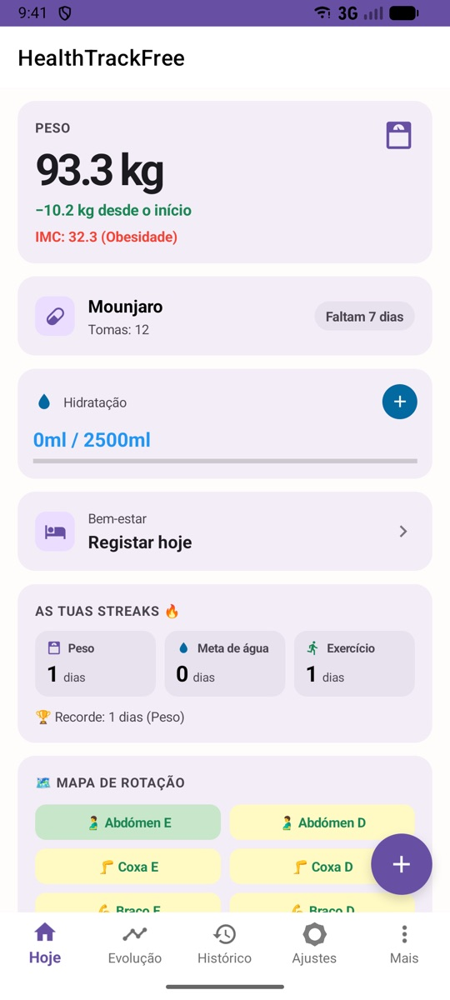
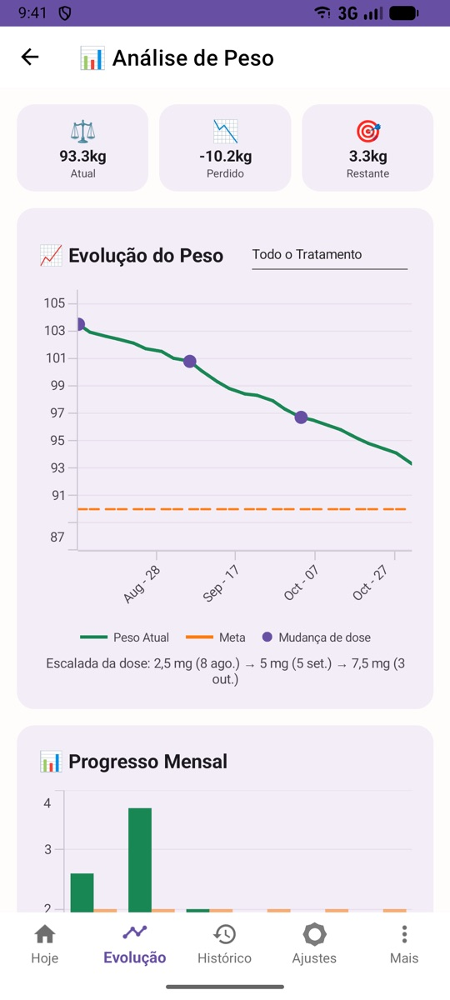
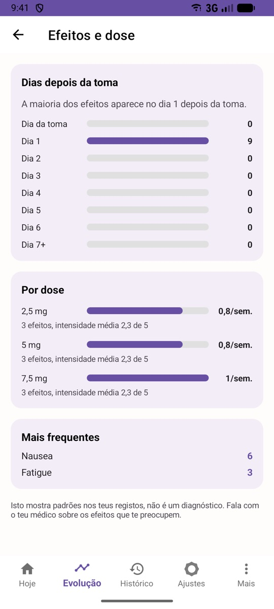
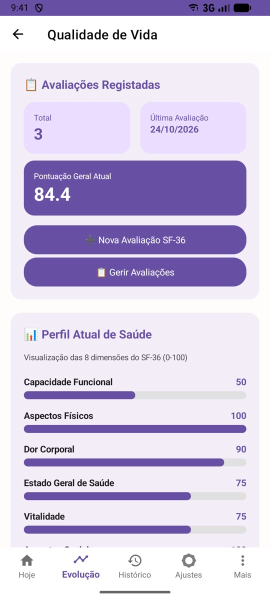
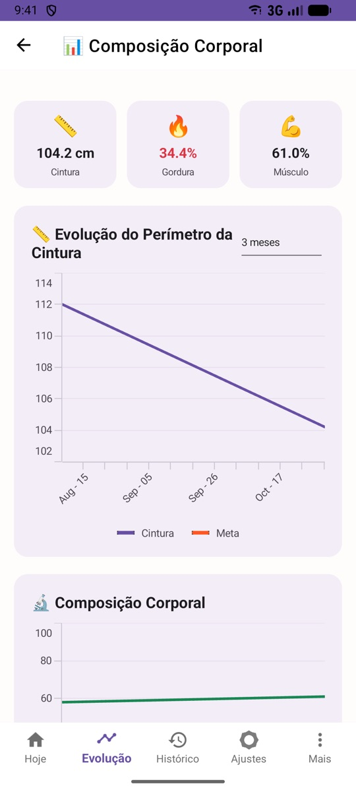
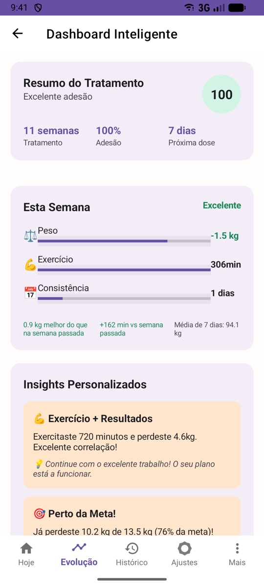
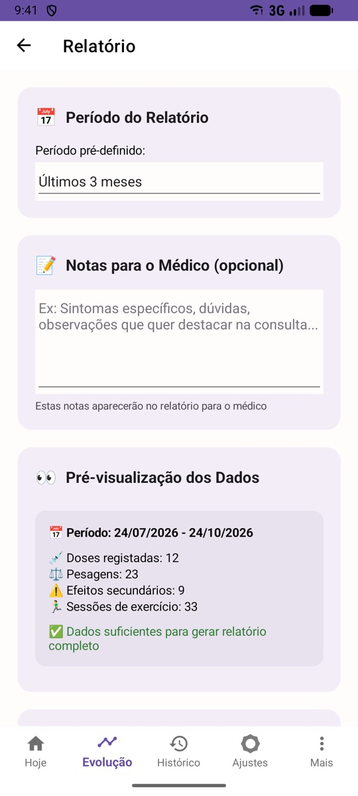
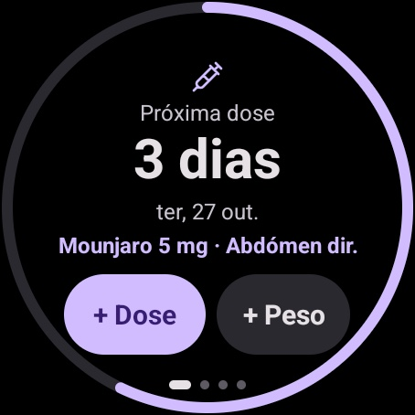
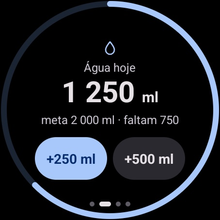
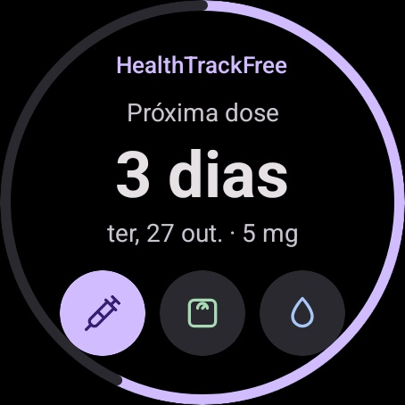
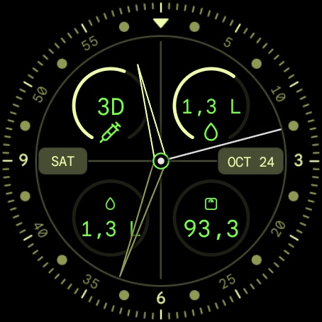
No Android, sim: o HealthTrackFree é grátis, sem anúncios nem compras dentro da app. No iPhone, o Tracely custa 0,99 € uma única vez, para cobrir os custos da Apple. As duas têm as mesmas funcionalidades.
Ozempic, Wegovy, Mounjaro, Zepbound, Saxenda, Victoza e Rybelsus estão na lista, e podes escrever qualquer outro. O intervalo entre tomas pode ser semanal, diário ou o que o teu médico indicar.
Os dados ficam no teu telemóvel. Só vão para a cloud se ligares a sincronização, e nunca são partilhados com terceiros. A IA é opcional e só envia dados com a tua chave e o teu consentimento.
Sim. No iPhone a app chama-se Tracely e está na App Store por 0,99 €.
Relógios Wear OS, ligados a um telemóvel Android com o HealthTrackFree 3.4 ou mais recente. Ainda não há app para Apple Watch.
Sim. Em CSV, Excel ou FHIR, e com relatórios em PDF para o médico. O backup guarda tudo, incluindo fotos e definições, num ficheiro que guardas onde quiseres.
Sim, tudo funciona sem internet. Só a sincronização e a IA, se as usares, precisam de ligação.
Não. A app regista e organiza a informação para a levares ao médico. Não diz que dose tomar e não substitui o acompanhamento médico.